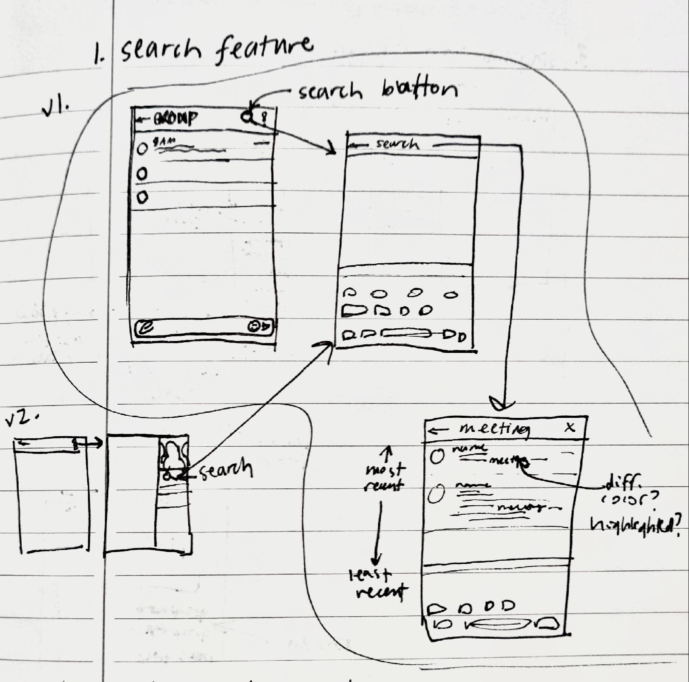
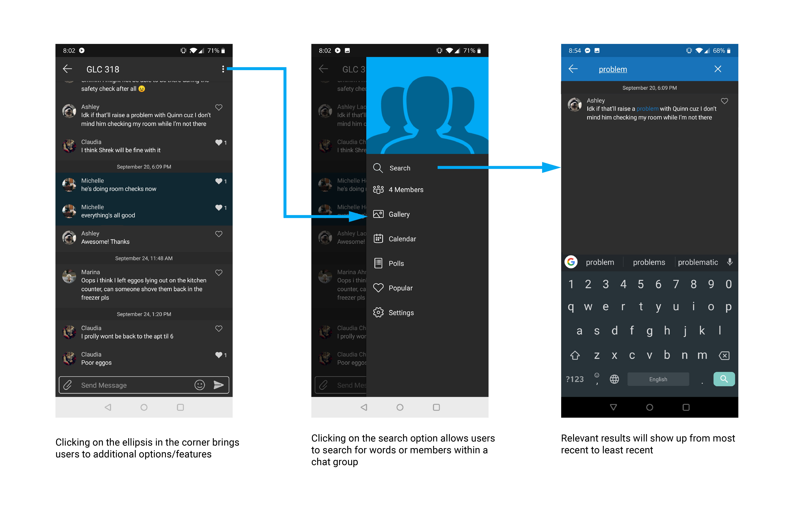
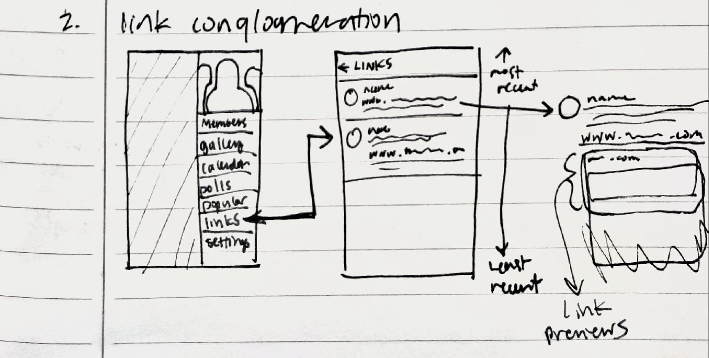
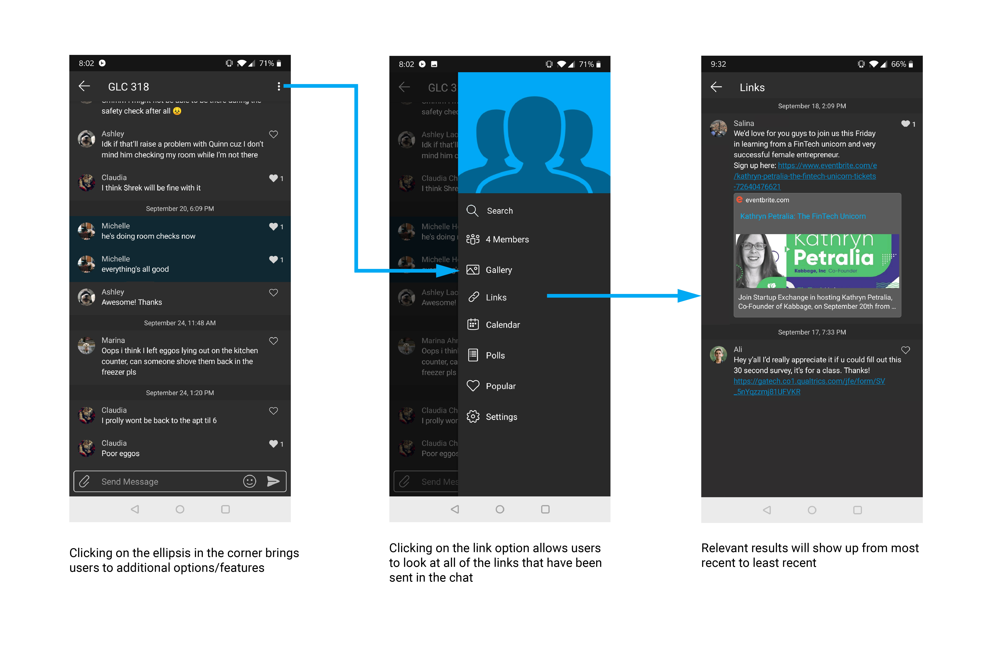
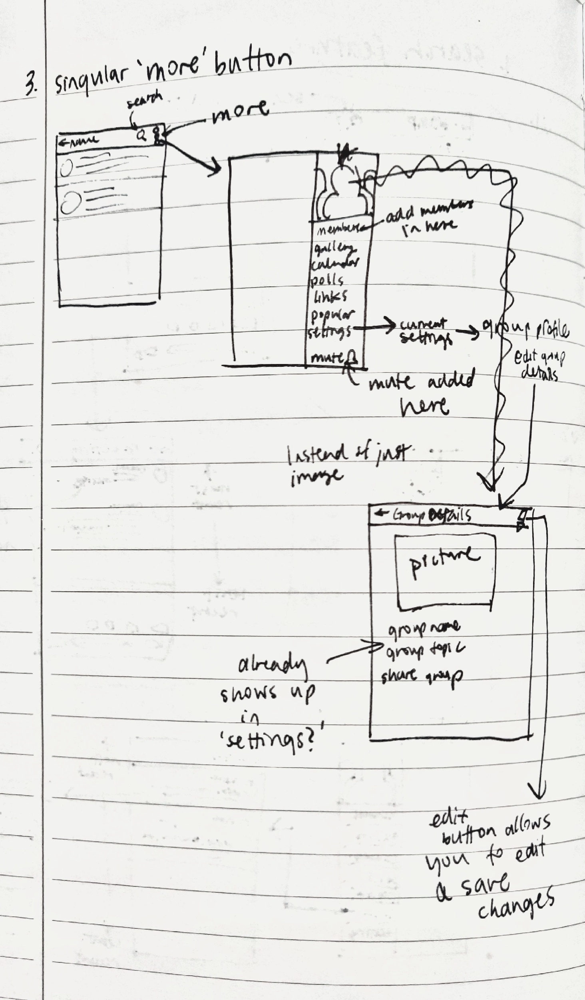
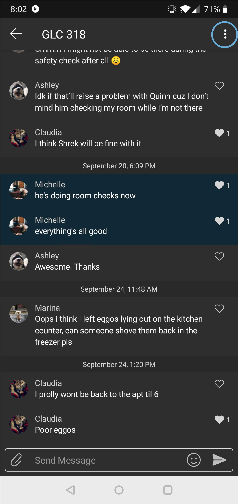
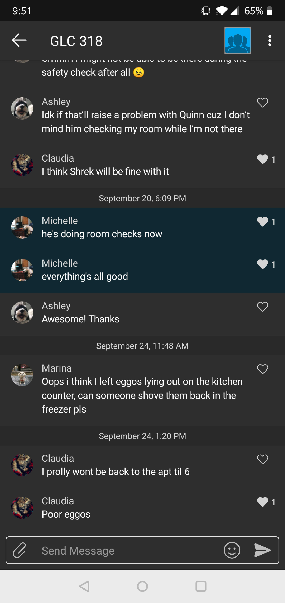
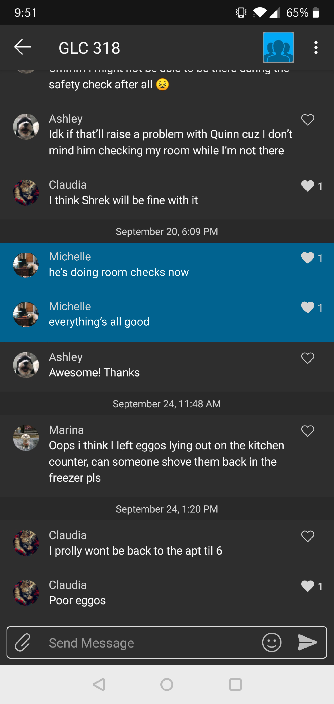

Sprint Duration: 2 days
Author: Michelle Hou (personal project, not a part of GroupMe)
Overview
GroupMe is a popular messaging platform that is very handy for large group chats. While there aren’t very many fancy features or such that need to be added to a messaging app like GroupMe, through my inquiry, I’ve learned that there are a few quirks here and there within the app that make the usage just a little bit more difficult. I’ve come up with some organizational features as well as some UI improvements.
Understanding GroupMe
Background Research
GroupMe was launched in 2010 and is a popular messaging platform amongst students, clubs, and organizations as it allows for large group messaging with the member limit being at 500 people. Most other messaging services such as iMessage or What’sApp are either not applicable to all operating systems or do not allow group chats this large, making GroupMe a unique service even within its kind.
User Research
As a user of GroupMe myself, I noticed that there were some frustrating quirks with the mobile app that made using it more difficult and thus more frustrating. I also asked a few peers about their opinions of the app and from what they told me, there were two main insights:
- Users want to communicate efficiently and find information efficiently. (“Sometimes the groups get really big and so I have to scroll so far to find an older message.”)
- The platform looks a bit dated and unfriendly.
Market Research
Because there are so many other messaging apps that exist, I wanted to see what kind of features those apps used to better organize and display their messages. I also made sure to keep in mind that I was only trying to improve GroupMe, not turn it into another existing platform.
Looking at other group-focused messaging platforms like Slack and Discord, I noticed that their main features involved channels to organize particular message topics, the ability to pin important messages, and a search feature to filter the messages. However, it is also important to note that Slack and Discord are more formal and are better suited for more serious work environments. GroupMe is a more casual service and perhaps channels and pinning would be too strict and serious.
Feature Designs
Efficiency
One main problem that people seem to have with GroupMe is its lack of efficiency. Because GroupMe supports such large group chats, the contents of the chats can easily become disorganized and it can be difficult to pick apart the important features. Often times, it can be a hassle to scroll through the long list of messages to find that link that was sent out or the important announcement. In order to lessen the amount of time spent scrolling, I propose a couple of solutions.
- A search feature
Other platforms such as Slack and Discord also have this feature and it could really come in handy in GroupMe when there are so many chats to rifle through in a group. Users will be able to search for keywords within each chat or search for messages from a certain sender.
User Feedback
Users mentioned that when the group name is longer, the top bar could begin to look quite cluttered. Thus, I would want to move the search option into the “more” ellipsis section so as to leave the top bar looking clean.
 - A link conglomeration feature
GroupMe already has something like this for pictures (Gallery), Polls, Calendar events, and liked posts (Popular). Often times, students use GroupMe to send links and often times, these links are for important events or important information to know. Thus, it would be useful to have a category for links as well, that will show the post that contained the link.
User Feedback
This is a pretty straightforward feature, so users thought that the design was suitable. One user mentioned that in the ordering of the features, “links” should be put underneath “gallery” as they are very similar in functionality. Also, by putting it further up, users are more likely to see it as it would most likely be a more commonly used feature.
What I did notice from exploring this option, though, is that many people did not even know that the Popular feature was an option, or that these organizational features existed. This leads me to my next improvement.
- Singular "more" button
When inside of a group chat, the top bar shows a couple of key things. First, there is a back button to return to see all of your chat groups, the title of the current group chat, the group picture, and the three ellipses for more options. Both the group picture and the three ellipses are clickable. Clicking the group picture shows the logistical information about the group--the members, the Gallery, Calendar, Popular, etc. All of those useful organizational features. Clicking on the ellipsis, you get a couple of more features such as mute, add members, share group, etc. In my opinion, there is no clear organization as to how the information is separated into these two different buttons. It is more intuitive to click on the ellipsis as that is the case for most other apps. So, many people accidentally gloss over the many features available after clicking the picture.
I propose that these get combined into a single button. It should be the ellipse as it is more universal amongst other apps as well, but it should look like it did after clicking the picture as the information organization was better.
User Feedback
It was brought to my attention that I had only been considering the Android version of GroupMe and so I didn’t see the iOS version which is considerably less confusing and does indeed combine the picture and the ellipsis icon. In my opinion, I would put the ellipsis instead of the picture, as the icon is small and there isn’t much point to the group picture when one is inside of the group chat anyway.

UI Designs
The second problem that people seemed to have with the app was its dated user interface. Because recent design seems to be moving in the direction of softer curves and “roundness,” GroupMe’s more straightforward and “rectangular” designs may make it seem less up to date and perhaps in a way, less credible.
However, I think that GroupMe’s straightforward design helps in making things simple and clear which makes it quicker to navigate the app. There isn’t much emphasis put on the specific person that is sending the message as the groups are larger and often, that may not be the priority. I think that this is a good approach.
The main issue regarding the UI that I noticed was that on dark mode, it can be difficult to differentiate and see different things. There were two main fixes that I think could easily solve this issue.
- Line separating chat groups
One such issue is the line between the different chat groups. Upon a quick glance, they are easy to miss and do not extend the width of the screen which may or may not make the page seem like a single piece and a bit confusing.
A quick fix would be to lighten the color of this line to match that of the date and the text and to extend it to the end.
- Color differentiation within chats
Once again in dark mode, I noticed that it is very difficult to see the difference between my own sent messages and the messages that others have sent. This is because the dark navy color is so similar to the gray. Especially because GroupMe doesn’t flip the orientation for your own messages like other apps, it’s already more difficult to see which messages are yours and which are other people’s. This doesn’t appear to be a problem in the regular light mode.
Another quick solution for this would be to lighten the color of your own message, creating a larger contrast and thus making it easier to differentiate.
 
Conclusions
I learned a lot doing this quick design sprint and if I had more time, I would have gotten more user feedback on my mockups and improved my designs even more. One of the most important things that I learned was to try to cover all fronts with regards to the operating systems (Android of iOS) as often Android apps are not as developed as iOS apps are. That aside, I also learned a great deal about the importance of incorporating users into the whole process so that the final product can be as close to users’ expectations as possible.